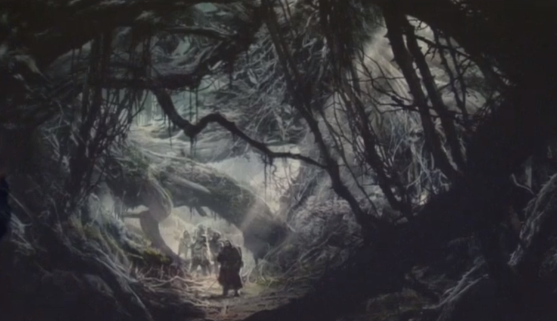

Mirkwood and the Misty Mountains

Mirkwood or the Forest of Great Fear was a great forest in Rhovanion.
It was only known by these names in the latter part of the Third Age, having previously been called Greenwood the Great and later became the Wood of Greenleaves.
Sauron's arrival caused a darkening of Greenwood, and at this point it became known as Mirkwood.
The children of Shelob, giant spiders, as well as bats and orcs in Dol Guldur's service occupied the forest and it became thicker, darker and covered in cobwebs.
This caused the Silvan population of Mirkwood to retreat even further, residing apparently exclusively in the Elvenking's Halls at the eastern end of the Forest River.
The ancient Old Forest Road was abandoned by men and Dwarves alike, with a new but seldom used path being made further from Dol Guldur and the Hobbits near the forest's eastern border migrated away.
Mirkwood remained a place of fear throughout the Third Age, though the kingdoms of Erebor and Dale flourished briefly in the time of the Kings under the Mountain.
This prosperity was ended by the arrival of the Dragon Smaug who brought yet further desolation to the area north-eastern Mirkwood.
Small homesteads of 'Woodmen' are also recorded as living in the western edge of the forest south of the old road in 2941.
In 2850 Gandalf visited Mirkwood and discovered that the Necromancer was none other than Sauron, who had regained his powers, millennia after the Battle of Dagorlad.
On 19 March 3019 Thranduil repulsed Sauron's forces in a bloody battle under the trees and mounted a campaign to clear northern Mirkwood of Sauron's servants.
At the same time the elves of Lórien led by Celeborn and Galadriel assaulted and destroyed Dol Guldur, and began to cleanse the southern part of the forest.
Celeborn and Thranduil met in the midst of the forest on Elven New Year and formally renamed the forest Eryn Lasgalen.
They then agreed to divide it between the Woodland Realm from the northern edge of the forest to the mountains, the Beornings from the mountains to the Narrows and East Lórien from the Narrows south.
The Misty Mountains, Mountains of Mist or Towers of Mist was a great mountain range that lay between Eriador in the west and the Great River Anduin in the east.
The northernmost peak of the Misty Mountains can be considered Mount Gundabad, where according to legend, Durin, eldest of the seven Fathers of the Dwarves, awoke.
Later it became a haven for Orcs.
The greatest Dwarven realm in Middle-Earth, Khazad-dûm, was located at the midpoint of the Misty Mountains.
The city was built under three peaks, the Mountains of Moria: Redhorn, Silvertine and Cloudyhead.
Inside Silvertine the Dwarves built the Endless Stair, a stairway from the foundations of the mountain to its peak.
At the southern tip of the Misty Mountains, beneath Methedras, was Isengard, which was originally a Gondorian fortress but was later given to Saruman.
Around 1050, the Harfoots migrated west across the Misty Mountains, fleeing the ever more numerous Men and the Shadow growing in Mirkwood, thus the Hobbits entered history.
Later the other two groups of Hobbits, the Stoors and Fallohides, migrated west as well, until by 2500 no Hobbits could be found east of the mountains.
In T.A. 2480 the Orcs began establishing secret strongholds in the Mountains barring all the passes to Eriador from Rhovanion, while Sauron populated Moria with his creatures.
The Fellowship of the Ring faced the challenge to pass the Mountains.
They decided to avoid the High Pass or the Gap of Rohan because of the threat of Orc patrols and Saruman's forces.
They attempted to cross Redhorn Pass, but a powerful blizzard blocked it, forcing them to journey through Moria.
There Gandalf was lost trying to stop Durin's Bane, and after falling into the abyss, he chased him up to the Dwarven Endless Stair and fought on the peak of Silvertine.